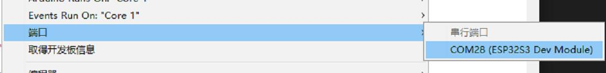
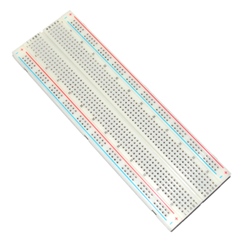

板载资源的使用
本章主要是通过一些示例项目，阐述 Leaf-S3 主控板的外设基本使用方法，通过下面的项目，您可以进行修改完成您的自己的项目。
其中 Leaf-S3 外设主要包括：UART、I2C、SPI、ADC、PWM、DAC等。
开始之前的准备
BPI-Leaf-S3 开发板上的typec使用的是ESP32-S3的原生USB接口，而不是传统的USB转TLL芯片。
为了让您的开发板能正确下载程序，您需要将BPI-Leaf-S3设置为下载模式，有以下两种方法：
通过USB连接到电脑，按下BOOT键，再按一下Reset键并松开，最后松开BOOT键。
在断开所有供电的状态下，按住BOOT键，然后将开发板插上电脑，最后松开BOOT键。
这时候可以在设备管理器中看到一个多的COM口

在IDE中选择这个端口

项目一 串口实验
在最开始的章节中，我们上传了一个 Blink 闪烁程序来测试板子上的 LED 状态灯。现在，我们使用 UART 串口，每秒打印一次计时数据。
所需元件
Leaf-S3 主板 X 1

硬件连接
此项目不需要其他传感器，所以只需要把Leaf-S3用USB连到电脑就能用。
输入代码
打开 Arduino IDE。尽管可以直接复制代码，我们还是建议您自己手动输入代码熟悉下。
代码如下:
展开查看
void setup()
{
Serial.begin(115200); //设置串口通信波特率
}
void loop()
{
static unsigned long i = 0; //定义变量i
Serial.println(i++); //i加一后输出i
delay(1000); //延时1秒
}
输入完成后，点击“编译”检查代码有无错误。确保没有错误后就可以开始上传了，点击“上传”之后 IDE 会把代码发送给 Leaf-S3 主板。上传完成之后，你需要按一下复位键，这样代码就能正常运行了
实验现象
完成之前步骤的上传后，打开 Arduino IDE 自带的串口监视器，可以看到如下的打印信息：
项目二 PWM(呼吸灯)
呼吸灯，即让 Leaf-S3 通过 PWM 驱动 LED 灯，实现 LED 的亮度渐变，看起来就像是在呼吸一样。关于 PWM 的解释，请阅览知识扩展部分。
所需元件
Leaf-S3 主板 X 1
LED X 1 (建议串联一个电阻限流)

硬件连接
将LED连接到Leaf-S3的GPIO13就可以了，长的那个脚接GPIO13，短的接到GND
输入代码
打开 Arduino IDE。尽管可以直接复制代码，我们还是建议您自己手动输入代码熟悉下。
代码如下:
展开查看
#define LED_CHANNEL_0 0 //设置通道0
#define LED_TIMER_13_BIT 13 //设置13位定时器
#define LED_BASE_FREQ 5000 //设置定时器频率位5000Hz
#define LED_PIN 13 //设置LED灯
int brightness = 0; // LED亮度
int fadeAmount = 1; // LED数量
//设置led灯的亮度
void ledcAnalogWrite(uint32_t value, uint32_t valueMax = 255) {
//计算占空比
uint32_t duty = (LED_BASE_FREQ / valueMax) * min(value, valueMax);
//设置占空比
ledcWrite(LED_CHANNEL_0, duty);
}
void setup() {
ledcSetup(LED_CHANNEL_0, LED_BASE_FREQ, LED_TIMER_13_BIT); ledcAttachPin(LED_PIN, LED_CHANNEL_0);
}
void loop() {
ledcAnalogWrite(brightness); brightness += fadeAmount;
if (brightness <= 0 || brightness >= 255) {
fadeAmount = -fadeAmount;
}
delay(30);
}
输入完成后，点击“编译”按钮检查代码是否有错误。确定没有错误后可以开始上传了，点击“上传”按钮 。IDE 会把代码发送给 Leaf-S3 主板。上传完成后您就可以看见Type-C旁边的LED 灯开始“呼吸”了！
现在让我们来回顾一下代码和硬件，看看它是如何工作。
知识学习
什么是 PWM 控制信号？
PWM（pulse-width modulation）脉冲宽度调制，MCU（微控制器）通过对开关器件的通断进行控制，使输出端得到一系列幅值相等的脉冲，用这些脉冲来代替正弦波或所需的波形。如下图所示：

其中，tON 是高电平持续时间，tPWM 是 PWM 波的周期，tPWM-tON 是低电平持续时间，占空比是指高电平持续时间占整个周期的比例，即 D=ton/tPWM 。
代码分析
Leaf-S3 的 PWM 比普通的 Arduino UNO 高级的多，设置上不能简单的使用analogWrite 函数来驱动 PWM，而是需要设置 timer 函数，以及相关的频率参数等才能工作。
#define LEDC_CHANNEL_0 0
定义了定时器使用的通道，Leaf-S3 总共有 16 个通道，这里用的是通道 0。
#define LEDC_TIMER_13_BIT 13
定义了定时器为 13 位定时器，即定时器最大计数为 2 的 13 次方。
#define LEDC_BASE_FREQ 5000
这是设置定时器的频率，单位是 Hz。接下来的 brightness 和 fadeAmount 参数分别表示 PWM 的占空比和每次变化的数值。
void ledcAnalogWrite(uint32_t value, uint32_t valueMax = 255)
这个函数是计算 PWM 占空比和设置 PWM 占空比，类似 Arduino 的 analogWrite 函数，可以看到，传递参数的最大值是 255，这是为了和 analogWrite 兼容。
ledcSetup(LEDC_CHANNEL_0, LEDC_BASE_FREQ, LEDC_TIMER_13_BIT);
ledcAttachPin(LED_PIN, LEDC_CHANNEL_0);
这两个函数是 Leaf-S3 定时器设置函数，函数原型及原理这里不讲述，如果您感兴趣可以看看底层源码（源码地址：C:\Users\“your-PC”\AppData\Local\Arduino15\packages\esp32\ hardware\ adafruit_metro_esp32s2 \0.0.3\libraries\ESP32\），这里只需要知道怎么用这些函数来设置相关的 timer 就可以了。
关于什么是 PWM 信号，在前面已经阐述过了，这里不再说明。
注意：Leaf-S3 的任何引脚都可以配置成 PWM 输出，您可以尝试着修改代码，完成您的项目。
项目三 ADC
ADC（模数转换器即 A/D 转换器），是指将模拟信号转变成数字信号。Leaf-S3 的ADC 是13位的，最大输出值为 8191，而 Arduino UNO 是 10 位的，最大输出值是 1023，因此，在精度上比Arduino UNO 要高，而且转换速率快，且在使用上兼容 Arduino analogRead 函数，直接读取即可。
所需元件
模拟角度传感器 X 1

面包板 X 1

Leaf-S3 主板 X 1
硬件连接
把 电位计插接到 Leaf-S3 主板上，然后将模拟角度传感器插接到 IO2（实验中用的是IO2）。 元件连接好后，使用 USB 线连接 Leaf-S3 和电脑。
输入代码
打开 Arduino IDE。尽管可以直接复制代码，我们还是建议您自己手动输入代码熟悉下。代码如下:
展开查看
void setup() {
// put your setup code here, to run once:
Serial.begin(115200);
}
void loop() {
// put your main code here, to run repeatedly:
Serial.println(analogRead(2));
delay(100);
}
输入完成后，点击“编译”检查代码有无错误。确保没有错误后就可以开始上传了，点击“上传”之后IDE 会把代码发送给 Leaf-S3 主板。上传完成后，打开 Arduino IDE 的串口监视器，旋转模拟角度传感器，可以看到串口监视器中的数值变化，如下图所示：

代码分析
由于Leaf-S3 的 ADC 在使用上完全兼容 Arduino，因此这里不再对analogRead 函数进行过多的讲解。
注意：如果您对 Arduino 的基本函数不是特别熟悉，您可以点击链接进行学习。
项目四 I2C
Leaf-S3 的 I2C 可以配置到任意 I/O 口，您可以通过传递相关参数进行配置。为了方便使用，我们已经将 I2C 进行了默认配置，在使用上完全兼容 Arduino，默认配置引脚可以在第一章简介中查看到。本项目是基于 I2C 默认配置，驱动 OLED 显示屏。
所需元件
I2C OLED-12864 显示屏 X 1

面包板 X 1
Leaf-S3 主板 X 1
硬件连接
把Leaf-S3 主板插到面包板上，然后将 OLED显示屏插接到 I2C 接口。（SDA是33，SCL是34）元件连接好后，使用 USB 线连接 Leaf-S3 和电脑。
输入代码
打开 Arduino IDE。尽管可以直接复制代码，我们还是建议您自己手动输入代码熟悉下。代码如下:
展开查看
#include
int UG2864Address = 0x3C;//OLED UG2864器件7位地址
prog_char F8X16[][16] PROGMEM =
{
0x00,0x00,0x00,0x00,0x00,0x00,0x00,0x00,0x00,0x00,0x00,0x00,0x00,0x00,0x00,0x00,// 0
0x00,0x00,0x00,0xF8,0x00,0x00,0x00,0x00,0x00,0x00,0x00,0x33,0x30,0x00,0x00,0x00,//!1
0x00,0x10,0x0C,0x06,0x10,0x0C,0x06,0x00,0x00,0x00,0x00,0x00,0x00,0x00,0x00,0x00,//"2
0x40,0xC0,0x78,0x40,0xC0,0x78,0x40,0x00,0x04,0x3F,0x04,0x04,0x3F,0x04,0x04,0x00,//#3
0x00,0x70,0x88,0xFC,0x08,0x30,0x00,0x00,0x00,0x18,0x20,0xFF,0x21,0x1E,0x00,0x00,//$4
0xF0,0x08,0xF0,0x00,0xE0,0x18,0x00,0x00,0x00,0x21,0x1C,0x03,0x1E,0x21,0x1E,0x00,//%5
0x00,0xF0,0x08,0x88,0x70,0x00,0x00,0x00,0x1E,0x21,0x23,0x24,0x19,0x27,0x21,0x10,//&6
0x10,0x16,0x0E,0x00,0x00,0x00,0x00,0x00,0x00,0x00,0x00,0x00,0x00,0x00,0x00,0x00,//'7
0x00,0x00,0x00,0xE0,0x18,0x04,0x02,0x00,0x00,0x00,0x00,0x07,0x18,0x20,0x40,0x00,//(8
0x00,0x02,0x04,0x18,0xE0,0x00,0x00,0x00,0x00,0x40,0x20,0x18,0x07,0x00,0x00,0x00,//)9
0x40,0x40,0x80,0xF0,0x80,0x40,0x40,0x00,0x02,0x02,0x01,0x0F,0x01,0x02,0x02,0x00,//*10
0x00,0x00,0x00,0xF0,0x00,0x00,0x00,0x00,0x01,0x01,0x01,0x1F,0x01,0x01,0x01,0x00,//+11
0x00,0x00,0x00,0x00,0x00,0x00,0x00,0x00,0x80,0xB0,0x70,0x00,0x00,0x00,0x00,0x00,//,12
0x00,0x00,0x00,0x00,0x00,0x00,0x00,0x00,0x00,0x01,0x01,0x01,0x01,0x01,0x01,0x01,//-13
0x00,0x00,0x00,0x00,0x00,0x00,0x00,0x00,0x00,0x30,0x30,0x00,0x00,0x00,0x00,0x00,//.14
0x00,0x00,0x00,0x00,0x80,0x60,0x18,0x04,0x00,0x60,0x18,0x06,0x01,0x00,0x00,0x00,///15
0x00,0xE0,0x10,0x08,0x08,0x10,0xE0,0x00,0x00,0x0F,0x10,0x20,0x20,0x10,0x0F,0x00,//016
0x00,0x10,0x10,0xF8,0x00,0x00,0x00,0x00,0x00,0x20,0x20,0x3F,0x20,0x20,0x00,0x00,//117
0x00,0x70,0x08,0x08,0x08,0x88,0x70,0x00,0x00,0x30,0x28,0x24,0x22,0x21,0x30,0x00,//218
0x00,0x30,0x08,0x88,0x88,0x48,0x30,0x00,0x00,0x18,0x20,0x20,0x20,0x11,0x0E,0x00,//319
0x00,0x00,0xC0,0x20,0x10,0xF8,0x00,0x00,0x00,0x07,0x04,0x24,0x24,0x3F,0x24,0x00,//420
0x00,0xF8,0x08,0x88,0x88,0x08,0x08,0x00,0x00,0x19,0x21,0x20,0x20,0x11,0x0E,0x00,//521
0x00,0xE0,0x10,0x88,0x88,0x18,0x00,0x00,0x00,0x0F,0x11,0x20,0x20,0x11,0x0E,0x00,//622
0x00,0x38,0x08,0x08,0xC8,0x38,0x08,0x00,0x00,0x00,0x00,0x3F,0x00,0x00,0x00,0x00,//723
0x00,0x70,0x88,0x08,0x08,0x88,0x70,0x00,0x00,0x1C,0x22,0x21,0x21,0x22,0x1C,0x00,//824
0x00,0xE0,0x10,0x08,0x08,0x10,0xE0,0x00,0x00,0x00,0x31,0x22,0x22,0x11,0x0F,0x00,//925
0x00,0x00,0x00,0xC0,0xC0,0x00,0x00,0x00,0x00,0x00,0x00,0x30,0x30,0x00,0x00,0x00,//:26
0x00,0x00,0x00,0x80,0x00,0x00,0x00,0x00,0x00,0x00,0x80,0x60,0x00,0x00,0x00,0x00,//;27
0x00,0x00,0x80,0x40,0x20,0x10,0x08,0x00,0x00,0x01,0x02,0x04,0x08,0x10,0x20,0x00,//<28
0x40,0x40,0x40,0x40,0x40,0x40,0x40,0x00,0x04,0x04,0x04,0x04,0x04,0x04,0x04,0x00,//=29
0x00,0x08,0x10,0x20,0x40,0x80,0x00,0x00,0x00,0x20,0x10,0x08,0x04,0x02,0x01,0x00,//>30
0x00,0x70,0x48,0x08,0x08,0x08,0xF0,0x00,0x00,0x00,0x00,0x30,0x36,0x01,0x00,0x00,//?31
0xC0,0x30,0xC8,0x28,0xE8,0x10,0xE0,0x00,0x07,0x18,0x27,0x24,0x23,0x14,0x0B,0x00,//@32
0x00,0x00,0xC0,0x38,0xE0,0x00,0x00,0x00,0x20,0x3C,0x23,0x02,0x02,0x27,0x38,0x20,//A33
0x08,0xF8,0x88,0x88,0x88,0x70,0x00,0x00,0x20,0x3F,0x20,0x20,0x20,0x11,0x0E,0x00,//B34
0xC0,0x30,0x08,0x08,0x08,0x08,0x38,0x00,0x07,0x18,0x20,0x20,0x20,0x10,0x08,0x00,//C35
0x08,0xF8,0x08,0x08,0x08,0x10,0xE0,0x00,0x20,0x3F,0x20,0x20,0x20,0x10,0x0F,0x00,//D36
0x08,0xF8,0x88,0x88,0xE8,0x08,0x10,0x00,0x20,0x3F,0x20,0x20,0x23,0x20,0x18,0x00,//E37
0x08,0xF8,0x88,0x88,0xE8,0x08,0x10,0x00,0x20,0x3F,0x20,0x00,0x03,0x00,0x00,0x00,//F38
0xC0,0x30,0x08,0x08,0x08,0x38,0x00,0x00,0x07,0x18,0x20,0x20,0x22,0x1E,0x02,0x00,//G39
0x08,0xF8,0x08,0x00,0x00,0x08,0xF8,0x08,0x20,0x3F,0x21,0x01,0x01,0x21,0x3F,0x20,//H40
0x00,0x08,0x08,0xF8,0x08,0x08,0x00,0x00,0x00,0x20,0x20,0x3F,0x20,0x20,0x00,0x00,//I41
0x00,0x00,0x08,0x08,0xF8,0x08,0x08,0x00,0xC0,0x80,0x80,0x80,0x7F,0x00,0x00,0x00,//J42
0x08,0xF8,0x88,0xC0,0x28,0x18,0x08,0x00,0x20,0x3F,0x20,0x01,0x26,0x38,0x20,0x00,//K43
0x08,0xF8,0x08,0x00,0x00,0x00,0x00,0x00,0x20,0x3F,0x20,0x20,0x20,0x20,0x30,0x00,//L44
0x08,0xF8,0xF8,0x00,0xF8,0xF8,0x08,0x00,0x20,0x3F,0x00,0x3F,0x00,0x3F,0x20,0x00,//M45
0x08,0xF8,0x30,0xC0,0x00,0x08,0xF8,0x08,0x20,0x3F,0x20,0x00,0x07,0x18,0x3F,0x00,//N46
0xE0,0x10,0x08,0x08,0x08,0x10,0xE0,0x00,0x0F,0x10,0x20,0x20,0x20,0x10,0x0F,0x00,//O47
0x08,0xF8,0x08,0x08,0x08,0x08,0xF0,0x00,0x20,0x3F,0x21,0x01,0x01,0x01,0x00,0x00,//P48
0xE0,0x10,0x08,0x08,0x08,0x10,0xE0,0x00,0x0F,0x18,0x24,0x24,0x38,0x50,0x4F,0x00,//Q49
0x08,0xF8,0x88,0x88,0x88,0x88,0x70,0x00,0x20,0x3F,0x20,0x00,0x03,0x0C,0x30,0x20,//R50
0x00,0x70,0x88,0x08,0x08,0x08,0x38,0x00,0x00,0x38,0x20,0x21,0x21,0x22,0x1C,0x00,//S51
0x18,0x08,0x08,0xF8,0x08,0x08,0x18,0x00,0x00,0x00,0x20,0x3F,0x20,0x00,0x00,0x00,//T52
0x08,0xF8,0x08,0x00,0x00,0x08,0xF8,0x08,0x00,0x1F,0x20,0x20,0x20,0x20,0x1F,0x00,//U53
0x08,0x78,0x88,0x00,0x00,0xC8,0x38,0x08,0x00,0x00,0x07,0x38,0x0E,0x01,0x00,0x00,//V54
0xF8,0x08,0x00,0xF8,0x00,0x08,0xF8,0x00,0x03,0x3C,0x07,0x00,0x07,0x3C,0x03,0x00,//W55
0x08,0x18,0x68,0x80,0x80,0x68,0x18,0x08,0x20,0x30,0x2C,0x03,0x03,0x2C,0x30,0x20,//X56
0x08,0x38,0xC8,0x00,0xC8,0x38,0x08,0x00,0x00,0x00,0x20,0x3F,0x20,0x00,0x00,0x00,//Y57
0x10,0x08,0x08,0x08,0xC8,0x38,0x08,0x00,0x20,0x38,0x26,0x21,0x20,0x20,0x18,0x00,//Z58
0x00,0x00,0x00,0xFE,0x02,0x02,0x02,0x00,0x00,0x00,0x00,0x7F,0x40,0x40,0x40,0x00,//[59
0x00,0x0C,0x30,0xC0,0x00,0x00,0x00,0x00,0x00,0x00,0x00,0x01,0x06,0x38,0xC0,0x00,//\60
0x00,0x02,0x02,0x02,0xFE,0x00,0x00,0x00,0x00,0x40,0x40,0x40,0x7F,0x00,0x00,0x00,//]61
0x00,0x00,0x04,0x02,0x02,0x02,0x04,0x00,0x00,0x00,0x00,0x00,0x00,0x00,0x00,0x00,//^62
0x00,0x00,0x00,0x00,0x00,0x00,0x00,0x00,0x80,0x80,0x80,0x80,0x80,0x80,0x80,0x80,//_63
0x00,0x02,0x02,0x04,0x00,0x00,0x00,0x00,0x00,0x00,0x00,0x00,0x00,0x00,0x00,0x00,//`64
0x00,0x00,0x80,0x80,0x80,0x80,0x00,0x00,0x00,0x19,0x24,0x22,0x22,0x22,0x3F,0x20,//a65
0x08,0xF8,0x00,0x80,0x80,0x00,0x00,0x00,0x00,0x3F,0x11,0x20,0x20,0x11,0x0E,0x00,//b66
0x00,0x00,0x00,0x80,0x80,0x80,0x00,0x00,0x00,0x0E,0x11,0x20,0x20,0x20,0x11,0x00,//c67
0x00,0x00,0x00,0x80,0x80,0x88,0xF8,0x00,0x00,0x0E,0x11,0x20,0x20,0x10,0x3F,0x20,//d68
0x00,0x00,0x80,0x80,0x80,0x80,0x00,0x00,0x00,0x1F,0x22,0x22,0x22,0x22,0x13,0x00,//e69
0x00,0x80,0x80,0xF0,0x88,0x88,0x88,0x18,0x00,0x20,0x20,0x3F,0x20,0x20,0x00,0x00,//f70
0x00,0x00,0x80,0x80,0x80,0x80,0x80,0x00,0x00,0x6B,0x94,0x94,0x94,0x93,0x60,0x00,//g71
0x08,0xF8,0x00,0x80,0x80,0x80,0x00,0x00,0x20,0x3F,0x21,0x00,0x00,0x20,0x3F,0x20,//h72
0x00,0x80,0x98,0x98,0x00,0x00,0x00,0x00,0x00,0x20,0x20,0x3F,0x20,0x20,0x00,0x00,//i73
0x00,0x00,0x00,0x80,0x98,0x98,0x00,0x00,0x00,0xC0,0x80,0x80,0x80,0x7F,0x00,0x00,//j74
0x08,0xF8,0x00,0x00,0x80,0x80,0x80,0x00,0x20,0x3F,0x24,0x02,0x2D,0x30,0x20,0x00,//k75
0x00,0x08,0x08,0xF8,0x00,0x00,0x00,0x00,0x00,0x20,0x20,0x3F,0x20,0x20,0x00,0x00,//l76
0x80,0x80,0x80,0x80,0x80,0x80,0x80,0x00,0x20,0x3F,0x20,0x00,0x3F,0x20,0x00,0x3F,//m77
0x80,0x80,0x00,0x80,0x80,0x80,0x00,0x00,0x20,0x3F,0x21,0x00,0x00,0x20,0x3F,0x20,//n78
0x00,0x00,0x80,0x80,0x80,0x80,0x00,0x00,0x00,0x1F,0x20,0x20,0x20,0x20,0x1F,0x00,//o79
0x80,0x80,0x00,0x80,0x80,0x00,0x00,0x00,0x80,0xFF,0xA1,0x20,0x20,0x11,0x0E,0x00,//p80
0x00,0x00,0x00,0x80,0x80,0x80,0x80,0x00,0x00,0x0E,0x11,0x20,0x20,0xA0,0xFF,0x80,//q81
0x80,0x80,0x80,0x00,0x80,0x80,0x80,0x00,0x20,0x20,0x3F,0x21,0x20,0x00,0x01,0x00,//r82
0x00,0x00,0x80,0x80,0x80,0x80,0x80,0x00,0x00,0x33,0x24,0x24,0x24,0x24,0x19,0x00,//s83
0x00,0x80,0x80,0xE0,0x80,0x80,0x00,0x00,0x00,0x00,0x00,0x1F,0x20,0x20,0x00,0x00,//t84
0x80,0x80,0x00,0x00,0x00,0x80,0x80,0x00,0x00,0x1F,0x20,0x20,0x20,0x10,0x3F,0x20,//u85
0x80,0x80,0x80,0x00,0x00,0x80,0x80,0x80,0x00,0x01,0x0E,0x30,0x08,0x06,0x01,0x00,//v86
0x80,0x80,0x00,0x80,0x00,0x80,0x80,0x80,0x0F,0x30,0x0C,0x03,0x0C,0x30,0x0F,0x00,//w87
0x00,0x80,0x80,0x00,0x80,0x80,0x80,0x00,0x00,0x20,0x31,0x2E,0x0E,0x31,0x20,0x00,//x88
0x80,0x80,0x80,0x00,0x00,0x80,0x80,0x80,0x80,0x81,0x8E,0x70,0x18,0x06,0x01,0x00,//y89
0x00,0x80,0x80,0x80,0x80,0x80,0x80,0x00,0x00,0x21,0x30,0x2C,0x22,0x21,0x30,0x00,//z90
0x00,0x00,0x00,0x00,0x80,0x7C,0x02,0x02,0x00,0x00,0x00,0x00,0x00,0x3F,0x40,0x40,//{91
0x00,0x00,0x00,0x00,0xFF,0x00,0x00,0x00,0x00,0x00,0x00,0x00,0xFF,0x00,0x00,0x00,//|92
0x00,0x02,0x02,0x7C,0x80,0x00,0x00,0x00,0x00,0x40,0x40,0x3F,0x00,0x00,0x00,0x00,//}93
0x00,0x06,0x01,0x01,0x02,0x02,0x04,0x04,0x00,0x00,0x00,0x00,0x00,0x00,0x00,0x00,//~94
};
char ch_buf[17]={0};
int RES = 6;//Gadgeteer PIN6
int DC = 7;//Gadgeteer PIN3
void Writec(unsigned char COM)
{
Wire.beginTransmission(UG2864Address);
Wire.write(0x00);
Wire.write(COM);
Wire.endTransmission();
}
void Writed(unsigned char DATA)
{
Wire.beginTransmission(UG2864Address);
Wire.write(0x40);
Wire.write(DATA);
Wire.endTransmission();
}
void SSD1306()
{
Writec(0XAE);//display off
Writec(0X00);//set lower column address
Writec(0X10);//set higher column address
Writec(0X40);//set display start line
Writec(0XB0);//set page address
Writec(0X81);//set contract control
Writec(0XCF);// VCC Generated by Internal DC/DC Circuit
Writec(0XA0);//set segment remap column address 127 is mapped to SEG0
Writec(0XA6);//normal / reverse normal display
Writec(0XA8);//multiplex ratio
Writec(0X3F);//1/64
Writec(0XC0);//Com scan direction remapped mode. Scan from COM[N-1] to COM0
Writec(0XD3);//set display offset
Writec(0X00);
Writec(0XD5);//set osc division
Writec(0X80);
Writec(0XD9);//set pre-charge period
Writec(0X11);
Writec(0XDa);//set COM pins
Writec(0X12);
Writec(0X8d);/*set charge pump enable*/
Writec(0X14);
Writec(0Xdb);//Set VcomH
Writec(0X20);
Writec(0XAF);//display ON
}
void fill(unsigned char dat)
{
unsigned char i,j;
Writec(0x00);//set lower column address
Writec(0x10);//set higher column address
Writec(0xB0);//set page address
for(j=0;j<8;j++)
{
Writec(0xB0+j);//set page address
Writec(0x00);//set lower column address
Writec(0x10);//set higher column address
for(i=0;i<128;i++)
{
Writed(dat);
}
}
}
void show_string(unsigned char x,unsigned char y,char *s)
{
unsigned char i,j,lower,higher;
char *t;
t=s;
lower=y%16;
higher=y/16;
if((x>3) || (y>120))
return;
Writec(0xB0+x*2);//set page address
Writec(lower);//set lower column address
Writec(0x10+higher);//set higher column address
for(j=0;*s!='\0';j++)
{
for(i=0;i<8;i++){
ch_buf[i] = pgm_read_word(&F8X16[*s-32][i]);
}
for(i=0;i<8;i++)
Writed(ch_buf[i]);
s++;
}
Writec(0xB0+x*2+1);//set page address
Writec(lower);//set lower column address
Writec(0x10+higher);//set higher column address
s=t;
for(j=0;*s!='\0';j++)
{
for(i=0;i<8;i++){
ch_buf[i] = pgm_read_word(&F8X16[*s-32][i+8]);
}
for(i=0;i<8;i++)
Writed(ch_buf[i]);
s++;
}
}
void oled_init(void)
{
pinMode(RES,OUTPUT);//RES
pinMode(DC,OUTPUT);//D/C#
digitalWrite(DC,LOW);
Wire.begin();
digitalWrite(RES,HIGH); delay(100);
digitalWrite(RES,LOW); delay(100);
digitalWrite(RES,HIGH); delay(100);
SSD1306();
fill(0x00);
}
void setup() {
oled_init();
}
void loop()
{
fill(0x00);
show_string(0,12,"BananaPi");
show_string(2,12,"banana-pi.org");
while(1);
}
输入完成后，点击“编译”检查代码有无错误。确保没有错误后就可以开始上传了，点击“上传”之后 IDE 会把代码发送给 Leaf-S3 主板。上传完成后，OLED 显示屏会显示“BananaPi banana-pi.org”字样。
代码分析
本项目的代码相对于前面的项目较多，主要是基于 I2C 通信对 OLED 显示屏底层寄存器的直接驱动。
void Writec(unsigned char COM)
设置寄存器函数，通过 I2C 对 OLED 显示屏设置，I2C 使用方法完全兼容 Arduino。
void Writed(unsigned char DATA)
写数据函数，I2C 使用方法完全兼容 Arduino。
注意：Leaf-S3 的 I2C 与 Arduino 完全兼容，主要是调用 Wire 库文件使用。
项目五 SPI
在很多传感器中，都使用 SPI 通信，因为 SPI 通信速率相对于 I2C 更快，没有地址冲突的弊端。SPI，是 一种高速的、全双工、同步的通信总线，而 Leaf-S3 的 SPI 可以配置到所有 I/O，您可以阅览底层 代码进行使用（初学者不建议使用）。为了更好的使用体验，Leaf-S3 默认情况下配置了IO35、IO36、IO37 为 SPI 口，在使用上则完全兼容 Arduino。 本项目使用 Leaf-S3，通过 SPI 读取 BME280 温湿度传感器的数据，示例中使用的是BME280 库文件，关于 SPI 驱动您可以阅览 BEM280 库文件，点击链接下载 BME280 库文件。
所需元件
BME280 温湿度传感器 X 1

注意：BME280 传感器本身支持 I2C 和 SPI 通信，这里我们采用 SPI 通信。
面包板 X 1
Leaf-S3 主板 X 1
输入代码
打开 Arduino IDE。尽管可以直接复制代码，我们还是建议您自己手动输入代码熟悉下。 （这个程序需要DFRobot_BME280库，需要在GitHub下载，解压到Arduino\ Library 文件夹下 ）代码如下：
展开查看
/*!
* read_data_spi.ino
*
* Download this demo to test read data from bme280, connect sensor through spi interface
* Connect cs pin to io 2
* Data will print on your serial monitor
*
* Copyright [DFRobot](http://www.dfrobot.com), 2016
* Copyright GNU Lesser General Public License
*
* version V1.0
* date 12/03/2019
*/
#include "DFRobot_BME280.h"
#include "Wire.h"
typedef DFRobot_BME280_SPI BME; // ******** use abbreviations instead of full names ********
# define PIN_CS 2
BME bme(&SPI, PIN_CS); // select TwoWire peripheral and set cs pin id
#define SEA_LEVEL_PRESSURE 1015.0f
// show last sensor operate status
void printLastOperateStatus(BME::eStatus_t eStatus)
{
switch(eStatus) {
case BME::eStatusOK: Serial.println("everything ok"); break;
case BME::eStatusErr: Serial.println("unknow error"); break;
case BME::eStatusErrDeviceNotDetected: Serial.println("device not detected"); break;
case BME::eStatusErrParameter: Serial.println("parameter error"); break;
default: Serial.println("unknow status"); break;
}
}
void setup()
{
Serial.begin(115200);
bme.reset();
Serial.println("bme read data test");
while(bme.begin() != BME::eStatusOK) {
Serial.println("bme begin faild");
printLastOperateStatus(bme.lastOperateStatus);
delay(2000);
}
Serial.println("bme begin success");
delay(100);
}
void loop()
{
float temp = bme.getTemperature();
uint32_t press = bme.getPressure();
float alti = bme.calAltitude(SEA_LEVEL_PRESSURE, press);
float humi = bme.getHumidity();
Serial.println();
Serial.println("======== start print ========");
Serial.print("temperature (unit Celsius): "); Serial.println(temp);
Serial.print("pressure (unit pa): "); Serial.println(press);
Serial.print("altitude (unit meter): "); Serial.println(alti);
Serial.print("humidity (unit percent): "); Serial.println(humi);
Serial.println("======== end print ========");
delay(1000);
}
输入完成后，点击“编译”检查代码有无错误。确保没有错误后就可以开始上传了，点击“上传”之后 IDE 会把代码发送给 Leaf-S3 主板。打开 Arduino 串口监视器，可以看到打印信息如下：

代码分析
本项目采用的是 BME280 库文件，在 Item-5.ino 文件中并没有对 SPI 底层进行操作，不过，Leaf ESP32-S3 的 SPI 使用完全兼容 Arduino。
项目六 WS2812
Leaf-S3 集成了一个型号为WS2812的RGB彩灯。 本项目是点亮 Leaf-S3 的RGB彩灯的实验，
所需元件
Leaf-S3 主板 X 1
注意：该项目不需要连接其他传感器。
输入代码
打开 Arduino IDE。尽管可以直接复制代码，我们还是建议您自己手动输入代码熟悉下。 （这个程序需要Adafruit_NeoPixel库，需要在GitHub下载，解压到Arduino\ Library 文件夹下）代码如下:
展开查看
// NeoPixel Ring simple sketch (c) 2013 Shae Erisson
// Released under the GPLv3 license to match the rest of the
// Adafruit NeoPixel library
#include
#ifdef __AVR__
#include // Required for 16 MHz Adafruit Trinket
#endif
// Which pin on the Arduino is connected to the NeoPixels?
#define PIN 18 // On Trinket or Gemma, suggest changing this to 1
// How many NeoPixels are attached to the Arduino?
#define NUMPIXELS 1 // Popular NeoPixel ring size
// When setting up the NeoPixel library, we tell it how many pixels,
// and which pin to use to send signals. Note that for older NeoPixel
// strips you might need to change the third parameter -- see the
// strandtest example for more information on possible values.
Adafruit_NeoPixel pixels(NUMPIXELS, PIN, NEO_GRB + NEO_KHZ800);
#define DELAYVAL 500 // Time (in milliseconds) to pause between pixels
void setup() {
// These lines are specifically to support the Adafruit Trinket 5V 16 MHz.
// Any other board, you can remove this part (but no harm leaving it):
#if defined(__AVR_ATtiny85__) && (F_CPU == 16000000)
clock_prescale_set(clock_div_1);
#endif
// END of Trinket-specific code.
pixels.begin(); // INITIALIZE NeoPixel strip object (REQUIRED)
}
void loop() {
pixels.clear(); // Set all pixel colors to 'off'
// The first NeoPixel in a strand is #0, second is 1, all the way up
// to the count of pixels minus one.
for(int i=0; i < NUMPIXELS; i++) { // For each pixel...
// pixels.Color() takes RGB values, from 0,0,0 up to 255,255,255
// Here we're using a moderately bright green color:
pixels.setPixelColor(i, pixels.Color(0, 150, 0));
pixels.show(); // Send the updated pixel colors to the hardware.
delay(DELAYVAL); // Pause before next pass through loop
}
}
输入完成后，点击“编译”检查代码有无错误。确保没有错误后就可以开始上传了，点击“上传”之后 IDE 会把代码发送给 Leaf-S3 主板。复位后WS2812灯会开始亮绿灯，
注意：如果需要其他颜色，可以修改代码中的RGB值。
代码分析
本项目使用 Leaf-S3 集成的WS2812灯，默认GPIO是18。
#define PIN 18
设置GPIO引脚号
#define NUMPIXELS 1
设置灯的个数，如果您想连接更多WS2812，可以换一个IO，并修改灯的数量。
项目七 触摸传感器
Leaf-S3 提供了多达 10 个电容式传感器 GPIO，能够探测由手指或其他物品直接接触或接近而产生的电容差异。这种低噪声特性和电路的高灵敏度设计适用于较小的触摸板，可以直接用于触摸开关。本项目阐述了如何通过Arduino 代码获取 Leaf-S3 的触摸传感器状态，并打印状态。
所需元件
Leaf-S3 主板 X 1
注意：该项目不需要连接其他传感器。
输入代码
打开 Arduino IDE。尽管可以直接复制代码，我们还是建议您自己手动输入代码熟悉下。
代码如下:
展开查看
void setup()
{
Serial.begin(115200);
delay(1000); // give me time to bring up serial monitor
Serial.println("Leaf-S3 Touch Test");
}
void loop(){
Serial.println(touchRead(T2)); // get value using T0->D9
delay(100);
}
输入完成后，点击“编译”检查代码有无错误。确保没有错误后就可以开始上传了，点击“上传”之后 IDE 会把代码发送给 Leaf-S3 主板。打开 Arduino IDE 串口监视器，并用手触摸 GPIO2（T2 对应的是GPIO2），可以看到会打印出的数据突然变小，如下图所示：

代码分析
获取触摸传感器的 GPIO 状态，只需要调用 touchRead 函数，函数原型如下：
uint16_t touchRead(uint8_t pin)
返回“0”表示没有触摸，“1”表示触摸。其中 pin 是 T0~T9，对应到 Leaf 的引脚如下表所示：
| 触摸传感器序号 | 对应的 ESP32 硬件 | Leaf-S3 | |
| T1 | GPIO1 | IO1 | |
| T2 | GPIO2 | IO2 | |
| T3 | GPIO3 | IO3 | |
| T4 | GPIO4 | IO4 | |
| T5 | GPIO5 | IO5 | |
| T6 | GPIO6 | IO6 | |
| T7 | GPIO7 | IO7 | |
| T8 | GPIO8 | IO8 | |
| T9 | GPIO9 | IO9 | |
| T10 | GPIO10 | IO10 | |
| T11 | GPIO11 | IO11 | |
| T12 | GPIO12 | IO12 | |
| T13 | GPIO13 | IO13 | |
| T14 | GPIO14 | IO14 | |